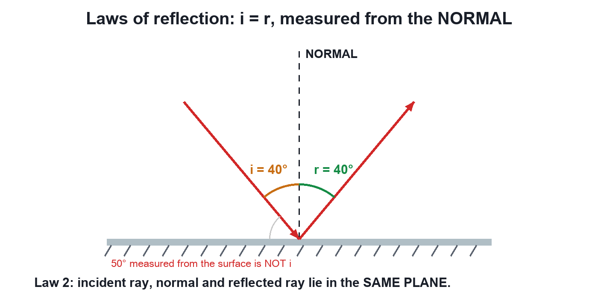

Chapter 9 · Physics
Laws of Reflection
Video not playing? Watch on Instagram · YouTube
To hit a hidden target with a laser and a mirror you need 2 rules: i = r (both measured from the normal) and all three rays in one plane.
Download the short notesPDF, 105 KB · solved examples, practice set and answer key That's all the videos in this chapter so far Back to Light – Reflection and Refraction
Key points
- First law: angle of incidence = angle of reflection (i = r).
- Angles are measured from the normal, not from the surface.
- Second law: incident ray, normal and reflected ray lie in the same plane.
- Along the normal (i = 0) the ray returns on itself.
The two laws

i = r (both from the normal)
Solved examples
- A ray makes 30° with the mirror: i = 90° − 30° = 60°, so r = 60°.
- The angle between incident and reflected rays is 90°: i = r = 45°.
- Light falls along the normal: i = r = 0°.
Try it yourself
Goal: Discover that r = i (measured from the normal) by aiming a laser at a target.
- Move the slider to change the angle of incidence.
- Watch the angle of reflection and the angle from the surface.
- Hit the target, then press New target and try again.
Quick quiz
5 questions. Choose an answer for each, then submit to see your score and the explanations.
More from Light – Reflection and Refraction
 Reflection of LightThe Moon makes no light, yet it shines at night: sunlight bounces off it to our eyes. That bouncing back is reflection.Physics
Reflection of LightThe Moon makes no light, yet it shines at night: sunlight bounces off it to our eyes. That bouncing back is reflection.Physics Light: Chapter IntroductionWe see things because light bounces off them into our eyes. At a surface light has 2 options: bounce back (reflection) or go in and bend (refraction).Physics
Light: Chapter IntroductionWe see things because light bounces off them into our eyes. At a surface light has 2 options: bounce back (reflection) or go in and bend (refraction).Physics Light Travels in Straight LinesYou can hear a friend round a corner but not see them: sound bends, light travels in straight lines. We draw its path as a ray.Physics
Light Travels in Straight LinesYou can hear a friend round a corner but not see them: sound bends, light travels in straight lines. We draw its path as a ray.Physics